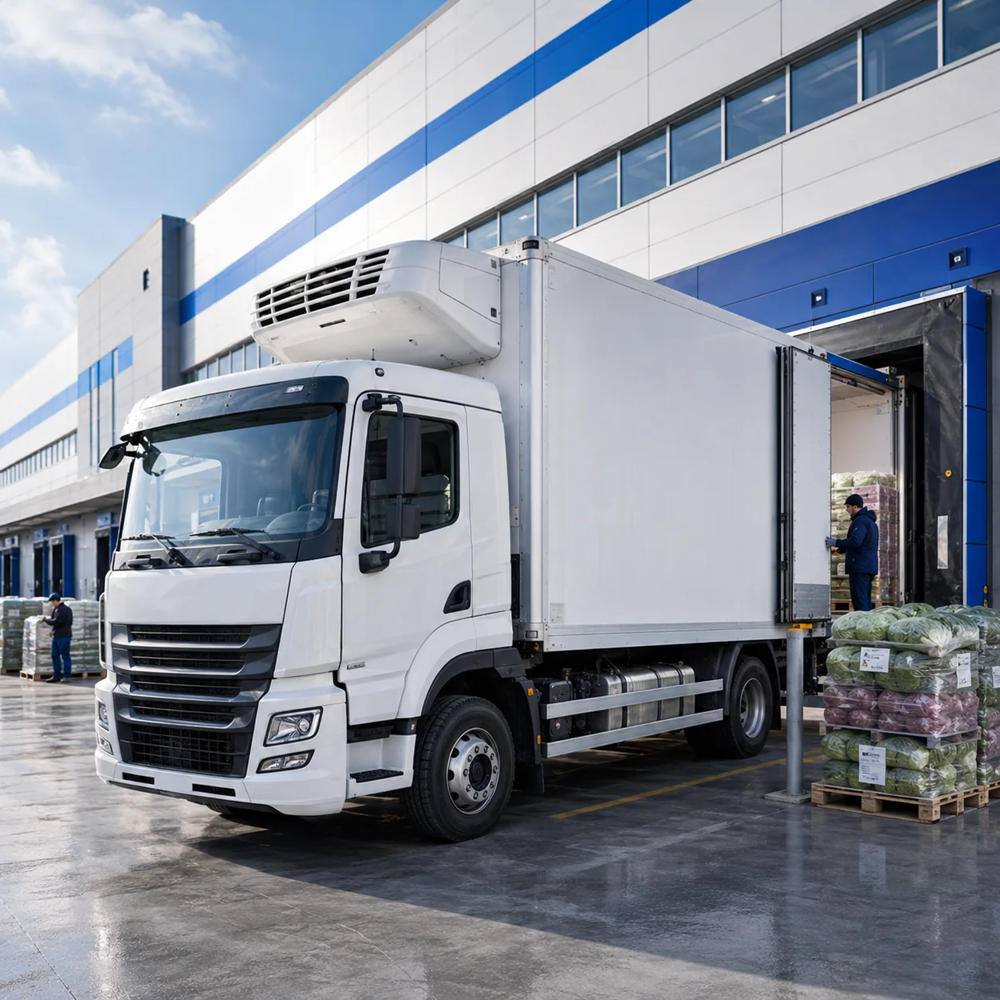
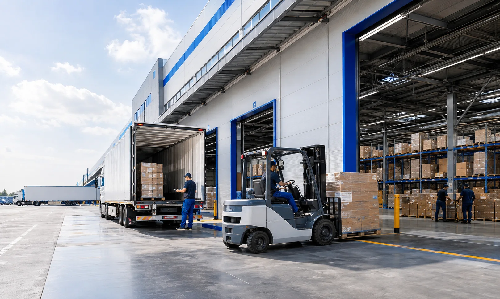
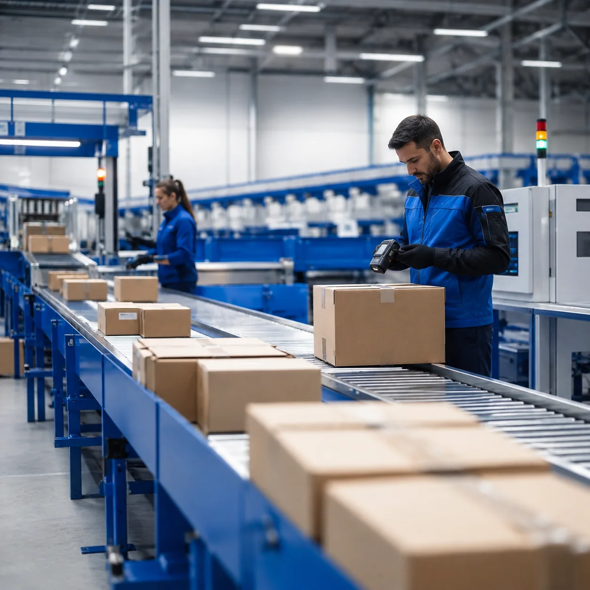
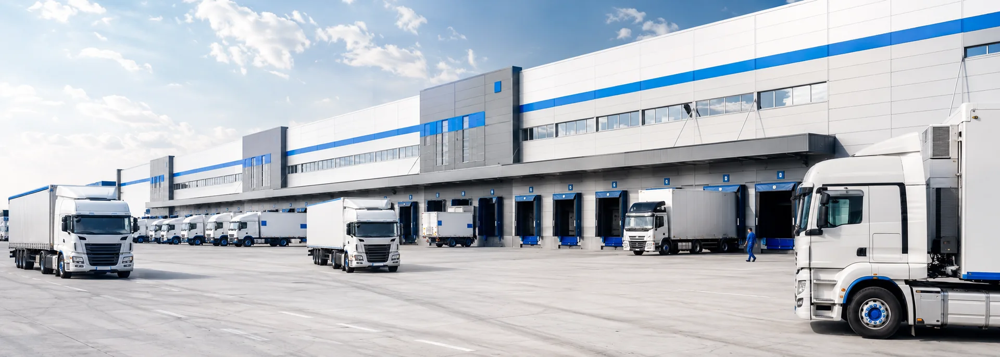
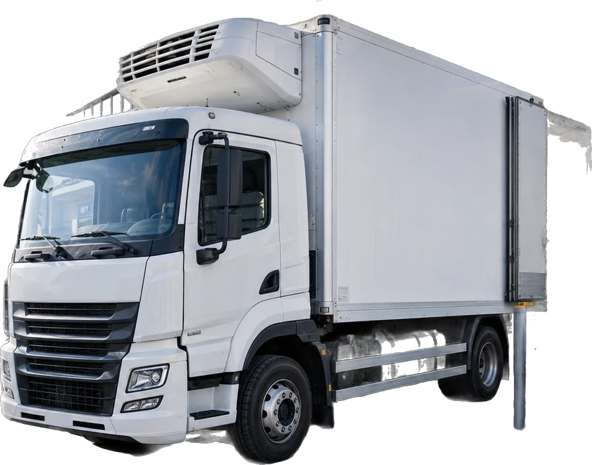

Transporte refrigerado · Córdoba → todo el país
LOPEZCOR
Tu carga llega fría, entera y a horario.
25 años moviendo mercadería para marcas que no pueden fallar. 20 unidades propias, cámara de frío y un responsable que te avisa antes de que preguntes.
01 — Qué movemos
Cuatro formas de sacar tu mercadería de la planta
No hacemos de todo un poco: movemos carga que tiene fecha, temperatura y un cliente esperando del otro lado.
-
01
Distribución refrigerada
Congelados, frescos y productos que no toleran un grado de más. El equipo de frío arranca antes de cargar y la temperatura queda registrada durante todo el viaje.

-
02
Carga general y paletizada
Pallets, bultos y mercadería seca entre plantas, depósitos y centros de distribución. Carga completa o consolidada con otros destinos del mismo corredor.

-
03
Reparto a sucursales y cadenas
Entregas con ventana horaria en supermercados, mayoristas y locales. Remito conformado y aviso de descarga el mismo día, sucursal por sucursal.
-
04
Cross-docking y consolidación
Recibimos, clasificamos por destino y sale. Tu mercadería no duerme semanas en un depósito: cambia de camión y sigue viaje el mismo día.

02 — El viaje
Desde que cargamos hasta que firmás el remito
Scrolleá y seguí el recorrido completo de un viaje refrigerado de Córdoba a Buenos Aires.
- 01
Retiro y consolidación
Pasamos por tu planta y armamos la carga por destino: el pallet que baja primero entra último. Nada se acomoda dos veces en el camino.
- 02
Puertas cerradas y precinto
Cada viaje sale con precinto numerado propio. Si llega intacto, nadie abrió el furgón entre tu depósito y el destino.
- 03
El frío arranca antes que el motor
El equipo enfría el furgón antes de cargar y no se apaga hasta la descarga. La temperatura queda registrada durante todo el trayecto.
- 04
En ruta, con seguimiento
Sabés dónde está tu carga y a qué hora llega. Si la ruta cambia, te avisamos nosotros antes de que tengas que preguntar.
- 05
Descarga y remito conformado
Te mandamos el remito firmado y el registro de temperatura del viaje el mismo día. La entrega termina cuando vos tenés el papel.
03 — Cadena de frío
El grado que no se negocia
Un furgón que sube tres grados en la ruta no se nota en la foto: se nota en el reclamo del cliente y en la mercadería que vuelve. Por eso el frío es lo primero que controlamos y lo último que apagamos.
- −20 °C a +8 °CRango de trabajo según el producto: congelado, refrigerado o fresco.
- Equipo propioCámaras de frío instaladas en nuestras unidades, mantenidas por nosotros.
- Registro por viajeEl historial de temperatura viaja con el remito, no queda en el camión.
04 — Cobertura
De Córdoba a donde tengas que llegar
Nuestra base está en Córdoba y desde ahí salen los corredores principales. Para el resto del país armamos el viaje a demanda, con fecha cerrada antes de cargar.
- Buenos Aires y GBA≈ 700 km
- Rosario y Santa Fe≈ 400 km
- Mendoza y San Juan≈ 620 km
- Tucumán y NOA≈ 570 km
- Salta y Jujuy≈ 900 km
- Neuquén y Alto Valle≈ 1.100 km
¿Tu destino no está en la lista? Lo cotizamos igual: la mayoría de los viajes nuevos arranca así.

-
«Nos entregan en fecha y con el registro de temperatura adjunto al remito. En tres años de trabajo no perdimos un pallet por cadena de frío.»
Marcela RíosJefa de logística · distribuidora de congelados, Rosario -
«Lo que más valoramos es el aviso. Si hay corte de ruta nos enteramos por LopezCor, no por el cliente que reclama la descarga.»
Diego FerreyraSupply chain · alimentos, Córdoba
06 — Preguntas
Lo que nos preguntan antes de la primera carga
Si tu duda no está acá, escribinos por WhatsApp: contesta alguien de operaciones, no un bot.
¿Qué temperaturas manejan?
Trabajamos entre −20 °C y +8 °C según el producto: congelados, refrigerados y frescos. La temperatura se define con vos antes de cargar y queda asentada en el viaje.
¿Hacen cargas completas o compartidas?
Las dos. Si tu volumen no llena un furgón, consolidamos con otras cargas del mismo corredor y la tarifa baja. Si necesitás exclusividad, el camión sale solo con tu mercadería.
¿A qué provincias llegan?
Los corredores desde Córdoba salen todas las semanas hacia Buenos Aires, Santa Fe, Cuyo, el NOA y el Alto Valle. Al resto del país llegamos a demanda, con fecha confirmada antes de cargar.
¿Cómo sé dónde está mi carga?
Tenés un contacto directo de tráfico por WhatsApp: te confirma la salida, avisa cualquier desvío y te manda el remito conformado el día de la entrega.
¿Se puede trabajar con contrato mensual?
Sí. La mayoría de nuestros clientes arranca con un viaje suelto y termina con una frecuencia fija semanal, con tarifa acordada y unidad asignada.
07 — Contacto
¿Tenés una carga que no puede fallar?
Contanos qué movés, desde dónde y cada cuánto. Te devolvemos una cotización con fecha de salida y temperatura de trabajo, sin vueltas.
- WhatsApp351 773-8165
- Correohola@lopezcor.com.ar
- BaseCórdoba capital · operación en todo el país
